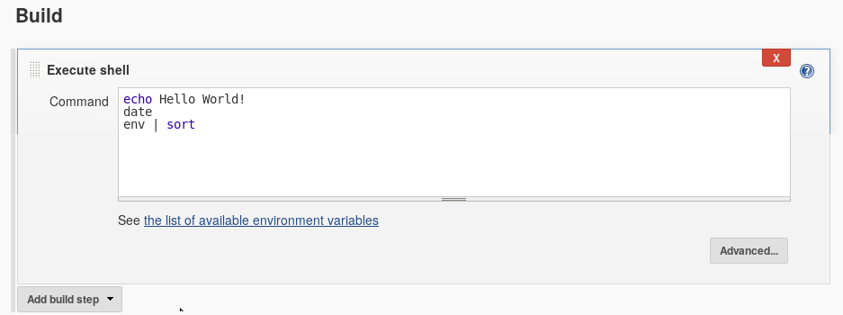
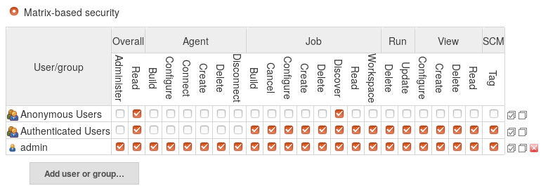

Automation is a key component for making your life easier. There are dozens of regular, boring tasks involved in server administration, and many of these can be automated in order to make your life easier.
CI systems provide one way to accomplish this.
Many of these systems focus on testing and deploying code, and provide some built-in shortcuts to accomplish this.
Testing and deploying code boils down to “please run this command, when X happens”, and they tend to function as “commands as a service”.
You can often configure them to “test code when it is pushed to a branch on GitHub”, or “test this code daily” or “deploy this code daily”.
If you need to automatically run a command whenever some event happens, and then to report this back in some standardised way (GitHub PR statuses, automatically deploying, notifications in chat), then a CI system can do this for you.
There are many options for, some of these have different features which may be desirable in one or another scenario.
This tutorial will specifically cover automation with Jenkins as that is one of the tools usegalaxy.* use for a subset of their automation.
There are dozens of CI systems available meeting different needs, which CI system you want to use depends largely on the task you are trying to automate. A couple of key factors you may wish to consider are:
How long will jobs run for? Free services often have time and log-output limits.
Are you concerned about secret storage? Self-hosted can be a better option here, but it depends on your security posture and threat matrix.
Do you have infrastructure available? Self-hosted could be worth it for the extra freedoms.
In general, self-hosted options have the overhead of managing and securing and updating the service, but offer significantly more freedom if you need it. They generally provide poor per-job isolation and assume you trust all of the jobs and people with access to build scripts used in the build pipeline. The free services (Travis, Circle CI) often have much better user-experiences and are easier to get started with and provide better out-of-the-box isolation.
We will look at setting up and managing a Jenkins server today, how to setup tasks, and some of the things that usegalaxy.* automate with their Jenkins servers.
Infrastructure
As per many of the tutorials, we will use Ansible to setup and manage our Jenkins server so we can easily leverage the work of a large community. Jenkins is one choice, there are other self-hosted systems you could use, but it is the one with which many of us are familiar.
Create a new playbook, build.yml with the following:
----hosts:buildbecome:truepre_tasks:-name:Allow jenkins user to execute things as rootcopy:content:|jenkins ALL=(ALL:ALL) NOPASSWD:ALLdest:/etc/sudoers.d/jenkinsvalidate:'visudo-cf%s'mode:0440roles:-geerlingguy.java-geerlingguy.jenkins
During this tutorial we will install everything on the same host, but often one keeps the build infrastructure on a separate host. We permit the Jenkins user to run everything as root, because later we will run Ansible with Jenkins, and we have become: true in our galaxy.yml playbook, so the jenkins user will need to be able to become root.
Edit the inventory file (hosts) an add a group for monitoring like:
[build]localhostansible_connection=local
Create and edit the group variables for the build group, group_vars/build.yml, and include the following:
jenkins_http_port:4000jenkins_admin_username:admin# Please change at least the password to something more suitablejenkins_admin_password:adminjenkins_url_prefix:/jenkinsjenkins_plugins:-matrix-auth
We need to set the port because it defaults to 8080 and Galaxy currently listens on port 8080.
Run the build server playbook:
ansible-playbook -i hosts build.yml
Update the nginx configuration in templates/nginx/galaxy.j2 to proxy jenkins with the following. Add it before the last curly brace at the end of the file.
location/jenkins{proxy_set_headerHost$host:$server_port;proxy_set_headerX-Real-IP$remote_addr;proxy_set_headerX-Forwarded-For$proxy_add_x_forwarded_for;proxy_set_headerX-Forwarded-Proto$scheme;# Fix the "It appears that your reverse proxy set up is broken" error.proxy_passhttp://127.0.0.1:4000;proxy_read_timeout90;}
Run the galaxy playbook which contains Nginx:
ansible-playbook -i hosts galaxy.yml
With this, we’re done, Jenkins is set up and ready to use!
Building things with Jenkins
We will look at a couple basic cases of how to build things with Jenkins, and wrap up with some advanced usage documentation that is not so practical for a tutorial environment.
Start by visiting your Jenkins instance, at https://your-domain/jenkins
Figure 1: Welcome to Jenkins! This is how it looks once you've run the playbook and logged in. The menu on the left gives you some ability to configure Jenkins, below it is the job queue where running and queued jobs will appear. When you have configured some jobs, they will be visible in the central panel.
A simple job
hands_on Hands-on: Create a simple job
Visit your Jenkins and login with the credentials you set up in the group variables file
Click New Item in the left hand menu
Give your job a name like my-project, and select that it is a freestyle project, and click “OK”
Figure 2: There are other types of jobs if you install plugins, but we will mostly use freestyle jobs as they are the most appropriate for our case.
The job configuration interface is split into a few sections, visible in the tabs at the top of the page:
Figure 3: The job configuration interface, split into 'General', 'Source Code Management', 'Build Triggers', 'Build', and 'Post-build Actions'
In the Build Triggers section:
Build Periodically
“Schedule”: H * * * *
details Cron syntax
Jenkins uses the cron syntax, with the addition that H can be used to randomly choose a value for that place, rather than running at precisely that minute or hour. This allows you to spread the load of multiple jobs over a period of time, rather than having maybe 10 jobs all attempting to run simultaneously if they do not need to.
For the above example it will choose one value for the H, a random minute in the hour, and then run every hour, every day, at that minute.
You can enter different expressions to see when Jenkins would run it next.
Add a build step:
Add build step
Click “Execute shell”
In the new step
“Command”:
echo Hello world!
date
env | sort

warning Danger!
This field allows you to execute arbitrary bash scripts. This is a reason Jenkins must be secured with HTTPS and a good username/password.
Click Save at the bottom
You will be brought back to the job information page. Click Build Now
Your job will appear in the Build History box at the left. Click the ball associated with your job, to see the console.
Figure 4: The build history box lets you see the status of previous, running, and queued builds. The 'sun' icon indicates that all builds have been successful, it will become more cloudy/overcast if you experience failures. The 'trend' button allows you to visualise how quickly builds have run historically.
Clicking the number will bring you to a job information page, where you can click “Console Output” to see the jobs output
Figure 5: The output of your first Jenkins job. All jenkins jobs log both the commands that were run, and their outputs. Use this to see which step potentially failed.
Setting up Jenkins jobs is as simple as setting up a cron job, but the results are stored in a nice visual interface that may provide better visibility than a cron job.
comment Author’s commentary
Cron jobs are great and often useful, but most people ignore the emails that cron sends them. I know I have mailboxes across N servers with dozens and dozens of unread emails from cron jobs. Jenkins is an improvement here because it shows “success” and “failure” messages that are clear, while storing the output in case you later decide that you want to look at it. For the most part, cron jobs write output that is never read, and we really only want to see the output if something has failed, but writing a cron job that behaves like this is unnecessarily complex.
Ansible in Jenkins
We will now setup Jenkins to run Ansible on cron. In the Galaxy Installation with Ansible tutorial we emphasised that it is useful to often run the entire playbook to ensure that all changes are applied. UseGalaxy.eu likes to accomplish this by having Jenkins run the playbooks every day. We know that even if our coworkers made some changes to the servers, that by tomorrow it will be reverted to a known-good configuration.
hands_on Hands-on: Jenkins running Ansible
Go back to the Jenkins homepage (click the logo in the top left)
Click New Item in the left hand menu.
Give your job a name like “ansible-galaxy”, and select that it is a “freestyle project”, and click “OK”
Configure your job
Build Triggers
Build Periodically
“Schedule”: H * * * *
Build
Add build step
Click “Execute shell”
In the new step
“Command”:
cd /home/ubuntu/galaxy/ # Change this to wherever your galaxy.yml is, you can check with the command pwd
ansible-playbook -i hosts galaxy.yml --diff
Save
Click Build Now and check the console output of the job
What do you see? It should look like Jenkins is running the playbook:
Started by user admin
Running as SYSTEM
Building in workspace /var/lib/jenkins/workspace/ansible-galaxy
[ansible-galaxy] $ /bin/sh -xe /tmp/jenkins6010384499214486550.sh
+ cd /home/ubuntu/galaxy/
+ ansible-playbook -i hosts galaxy.yml --diff
PLAY [galaxyservers] ***********************************************************
TASK [Gathering Facts] *********************************************************
ok: [gcc-3.training.galaxyproject.eu]
TASK [Install Dependencies] ****************************************************
[WARNING]: Could not find aptitude. Using apt-get instead
ok: [gcc-3.training.galaxyproject.eu]
With this we have Jenkins running our playbook for us! You can imaging several steps you could take to follow up from this:
Storing your playbooks in git like UseGalaxy.*
UseGalaxy.eu’s playbooks are public, anyone can contribute and if the PR is merged, it is automatically applied to our infrastructure within the next day. We store our job configuration in here as well which specifies how much memory and how many CPUs tools receive. Our teammates often can contribute fixes themselves when they notice a tool needs more memory.
This can prevent mistakes, if a coworker edits some configuration on the server and forgets to commit it, this ensures everything is reverted back to the expected state.
The amount of time the Galaxy playbook takes can be quite annoying when done manually but no one is upset if it takes 30 minutes when it is run on cron.
Alerting you if something went wrong
There are numerous plugins that can send notifications of build success/failure to various places like Slack, etc.
These are all next steps that are great to look into, and will make your systems more reliable and trustworthy as you will know when things change, and you can be certain that the code is configured how you specified.
Securing Jenkins
You have already secured Jenkins in that it is protected with a good password and HTTPS. This is one important thing. The other portion is the visibility of jobs and their outputs. In the above Ansible Galaxy deployment job we set the parameter --diff, so we could see what changed. This is an extremely helpful thing to do to be able to audit changes from a particular run. But! If you change the id_secret or other secret variables, then this diff will be visible in the job’s console logs. This is useful to see for admins but needs to be restricted so that the whole world cannot see this.
hands_on Hands-on: Securing Jenkins
Return to the Jenkins home page
Click on Manage Jenkins
Click on Configure Global Security
In the first block Access Control Change the Authorization strategy from “Logged-in users can do anything” to “Matrix-based security”
Click “Add user or group” and add the admin user
Configure the permissions like below. Clicking on the checked checkbox icon at the right will allow you to enable/disable all of the checkboxes for that row.

The matrix based security plugin is provided by a plugin, we installed this by setting the variable jenkins_plugins: [matrix-auth] in our group variables earlier.
The checkboxes give you the ability to grant or deny permissions to certain classes of users. Each column is an individual permission, and you can hover over each column to get more information about what that permission allows.
In the above example we have configured that:
Anonymous users (not logged in) may Read, so they can access the Jenkins page, but by default will not see any jobs. The Discover permission is also granted so that if a user has bookmarked the ansible-galaxy job page, they will automatically be redirected through the login page, if they are not already logged in.
Once they login and are Authenticated Users, they can see that Manage and Run Jobs and Views
Only the admin user, however, can configure Agents to run those jobs.
Under CSRF Protection, check the box to prevent CSRF, and select the default crumb issuer, and then enable proxy compatibility.
Save
question Question
Try accessing your Jenkins from a private browsing session. How does it look?
solution Solution
It should appear as if there are no jobs, until you log in.
Advanced Topics
These topics are outside the scope of a training or do not lend themselves well to interesting exercises, but some discussion and configuration information will be provided below documenting common issues and questions that can be useful if you start using Jenkins “in anger”.
Updating Jenkins
Jenkins updates regularly due to security issues. We recommend that you either:
Regularly check the Jenkins Changelog, and update the server whenever there are important security fixes
OR include some sort of yum or apt auto-updater on whichever system that Jenkins is running on
The downside of automatic updating is that Jenkins will restart and kill any jobs that had been running. Choose which works best for your environment. UseGalaxy.eu chose a completely automated setup because their jobs can be killed and few things are affected. UseGalaxy.org chose a more manual setup because their jobs are more critical, there if jobs fail, Galaxy pull request tests will fail unexpectedly and unhelpfully.
Updating Plugins
Plugins also regularly receive updates due to security issues. You should either check in with your Jenkins server regularly and apply updates when they are available, or automate this as well. UseGalaxy.eu uses a script like:
And we run this on cron hourly. The safe-restart at the end causes Jenkins to stop processing new jobs, and wait until all jobs are complete before restarting. Unfortunately this is not an option for Jenkins server updates.
Plugins
Jenkins provides an impressive number of plugins for a lot of different environments. Here are some of the ones we use and their purposes:
Plugin
Comments
Git Plugin
Allow cloning git repositories to build
Build Timeout
Allows us to automatically kill jobs which run longer than we expect. We can use this to set per-build timeouts
Credentials Binding Plugin
This can be used to inject secrets into builds, e.g. vault passwords.
The UseGalaxy.eu build server requires login with GitHub and ensures membership in the correct organisation to be able to access group secrets and build logs.
Job Configuration History plugin
This plugin tracks changes made in the configuration of jobs over time, so you can see what was changed in the Jenkins configuration which may have caused the job to start succeeding or failing.
ShiningPanda Plugin
Allows easily running jobs within a per-job python virtualenv.
SSH Agent Plugin
Allows providing specific SSH credentials to a build
These plugins can be installed via the Ansible automation by expanding jenkins_plugins in your group_vars/build.yml, or installed with the web interface.
Source Code Management
Jenkins supports most VCSs that are in use today. For the Git plugin, it allows you to clone a git repository into the job’s directory, and then run scripts from there. It forms the foundation of most jobs.
You may need to specify credentials for cloning from private repositories, in this case you should beware that when you configure the SSH credentials you should specify the user as git. You will also need to ensure that the server’s SSH public key is known to your Jenkins system which generally requires suing as the Jenkins user and running ssh git@... once, and accepting the “Unknown host” key prompt. We recommend that you use repository URLs of the format git@github.com:org/repo.git, if you are using one of the GitHub PR builder plugins, then this URL has to match a value in the incoming webhook and it is not always obvious that this needs to be set like this.
The “Branches to build” section allows you to specify which branches. Whenever you click “Build now”, Jenkins usually just picks the master branch to build, and doesn’t run a build job per-branch. If you are automatically triggering Jenkins builds based on GitHub (or other) webhooks, then you can ensure that branches that should not be built are filtered out here. Real life example: UseGalaxy.eu has one Jenkins job which should only build the master branch of a repository, and another job that only builds the PRs for that repository. We know the first job will only ever build the master branch so we can hardcode that there. With the Git plugin, many “Additional Behaviours” are available. If you have submodules in your repository, you will need to enable one of these to ensure that the repository is cloned recursively. If you want to ensure a fresh start each time because you write out temporary files to the current working directory, then there is a behaviour to wipe out the repository before each build.
Build Triggers
The GitHub Pull Request Builder plugin is not always easy to configure, here systems like Travis are generally significantly easier. Consider if that is an option. It is not a bad thing to use multiple CI systems, it provides some degree of redundancy where if one system is experiencing an outage it may not affect all CI jobs.
Credential Binding
If you provide credentials to Jenkins builds, they will automatically be stripped from log outputs. So if your job will not “leak” any private information (e.g. in --diff) and you want to share the build logs with your users to prove that actions were taken or that things are working and automated, then the credential binding plugin ensures that any secrets will be stripped from output and replaced with ******. They can be made available as environment variables, or in files that can be accessed.
We often upload a configuration file with secrets (e.g. .parsec.yml ), and then can just call our software parsec -c $PARSEC_CONFIG_FILE_LOCATION ... passing in that file, wherever Jenkins has stored it securely.
SSH Agent
This allows you to automatically inject credentials into your build’s SSH agent. If you want to rsync some build outputs to another server, or ssh to a server to run some one-off command, or to run ansible, then this is the feature you want. Beware that if you are pulling from and pushing to git repositories on GitHub with separate SSH credentials you may need to use a combination of the SSH Agent plugin, and injecting an SSH key through credential binding.
Real Life Examples
Here are some examples of how Jenkins is used in the wild, maybe it can provide some reference for potential uses within your organisation or solutions to various problems. The examples are mostly pulled from UseGalaxy.eu’s experiences, as the author is most familiar with those.
Compute Nodes
We attach VMs as compute nodes for Jenkins to use as executors. We have an OpenStack cloud available so that is an easy option for us. We setup the VMs such that Jenkins just logs in as the default centos user and uses the home directory for building jobs. There is a Jenkins plugin to manage the VMs in the cloud automatically (scaling up/down as necessary, removing VMs with full disk) but our cloud was upgraded and we could not get this working. It is worth trying if that is an option! There are other cloud provider plugins available with similar features.
We also use a custom image that includes a lot of our requirements pre-installed. We include e.g. LaTeX, Ruby/RVM, Java, Node, anything we think we might need for our jobs. This also lets us reduce the privileges of the jobs, nothing needsroot access to install packages globally. Python, Ruby, and Node all have something similar to virtualenvs.
Job: Apollo Builder
This is a relatively straightforward job to build a WAR file and upload it to our depot server.
#some env vars that are needed, it's kind of gross but it works :(
export JAVA_HOME=/usr/lib/jvm/java-1.8.0-openjdk-1.8.0.212.b04-0.el7_6.x86_64/
export PERL5LIB=/home/centos/workspace/usegalaxy-eu/apollo-builder/extlib/lib/perl5:$PERL5LIB
#setting a variable from some build data
APOLLO_VERSION=$(cat application.properties | grep app.version | sed's/.*=//g')#Check if this version needs to be built
curl --silent https://usegalaxy.eu/static/vgcn/ | \
grep -F "apollo-${APOLLO_VERSION}" && echo "Already built!" && exit 0;
#Build the thing
./apollo deploy
#Deploy it to our server
scp -i $PRIV_KEY \
target/*.war \
user@server:/static/apollo-${APOLLO_VERSION}.war
We use the “Secret file” binding to inject a specific private key (available in the build as $PRIV_KEY) but the SSH agent plugin would work equally well.
We could also use the “Archive Artifacts” plugin to have Jenkins retain all of the artefacts (build outputs that you care about) but we wanted to have an Ansible role pull those files and it was simpler to have them accessible at predictable URLs.
Job: Chado Schema Builder
Similar to the Apollo builder but it uploads outputs as GitHub releases which is useful for public projects with complex build pipelines. The CSB takes on average 5-6 hours to run so we cannot easily run this on free infrastructure.
Here we store both the build and deploy scripts in the GitHub repository. If you do this, you have to be careful about building PRs, as anyone can edit the build scripts and access your internal infrastructure!
Job: Website
We build our own Jekyll website because we have some plugins GitHub will not compile for us. The configuration here is more complex:
Throttle builds, since GitHub will only accept so many deploy requests in a time period
One SSH key used to clone the repository using the Git SCM, with “Wipe out repository & force clone” set.
Triggers on both:
Cron, daily
GitHub webhooks notifying us of pushes to master
SSH Agent is configured with a deploy SSH key (because git really prefers you provide keys in the SSH agent, I don’t know if it is possible to pass a keyfile on the CLI)
The .build.sh is run which activates the RVM pre-installed on the VMs
If the master branch is checked out, .publish.sh is run
Empty .nojekyll file to prevent GitHub from trying to build this.
Job: Install Tools
For this job we use Jenkin’s “Trigger other builds” feature:
We have one job that fetches all of the latest updates for IUC tools and writes those into yaml files. This job runs on cron every week.
This triggers a separate job to actually apply the changes to our server.
By splitting these up, we can run the “actually apply” portion without having to fetch updates to the tools first. Additionally we can have the second portion run only if the first portion succeeds, so we have some check that everything looks OK before trying to apply it.
We include a Galaxy API key as a credential and then use a Makefile contained in the project to do the steps. We don’t automatically test PRs so we don’t care if people change the Makefile because we visually validate it before merging their PR.
Configuration: Themes
Many people find the “blue/red ball” icons a bit hard to understand. Using the “Simple Theme Plugin” you can easily add custom CSS files or directly enter custom CSS. UseGalaxy.* use the jenkins-material-theme as it provides a slightly cleaner view of Jenkins with better iconography.
Configuration: Folder Permissions
We have the aforementioned problem that our playbooks run with --diff and while we want to capture this output and be able to review it, it is not necessary that the public can see it. So permissions are configured not only on the global Jenkins level, but also within a single folder of jobs. The folder permissions involve setting:
Properties
“Inheritance Strategy”: Do not inherit permission grants from other ACLs
Allowing Discover and nothing else for Anonymous + Authenticated
Explicitly granting all permissions for the admins
keypoints Key points
Automate all the things!
Especially regular tasks you might forget to do
Automatically run Ansible to ensure machines are in compliance
Feedback
Did you use this material as an instructor? Feel free to give us feedback on how it went.
Batut et al., 2018 Community-Driven Data Analysis Training for Biology Cell Systems 10.1016/j.cels.2018.05.012
details BibTeX
@misc{admin-jenkins,
author = "Helena Rasche",
title = "Automation with Jenkins (Galaxy Training Materials)",
year = "2021",
month = "01",
day = "06"
url = "\url{/training-material/topics/admin/tutorials/jenkins/tutorial.html}",
note = "[Online; accessed TODAY]"
}
@article{Batut_2018,
doi = {10.1016/j.cels.2018.05.012},
url = {https://doi.org/10.1016%2Fj.cels.2018.05.012},
year = 2018,
month = {jun},
publisher = {Elsevier {BV}},
volume = {6},
number = {6},
pages = {752--758.e1},
author = {B{\'{e}}r{\'{e}}nice Batut and Saskia Hiltemann and Andrea Bagnacani and Dannon Baker and Vivek Bhardwaj and Clemens Blank and Anthony Bretaudeau and Loraine Brillet-Gu{\'{e}}guen and Martin {\v{C}}ech and John Chilton and Dave Clements and Olivia Doppelt-Azeroual and Anika Erxleben and Mallory Ann Freeberg and Simon Gladman and Youri Hoogstrate and Hans-Rudolf Hotz and Torsten Houwaart and Pratik Jagtap and Delphine Larivi{\`{e}}re and Gildas Le Corguill{\'{e}} and Thomas Manke and Fabien Mareuil and Fidel Ram{\'{\i}}rez and Devon Ryan and Florian Christoph Sigloch and Nicola Soranzo and Joachim Wolff and Pavankumar Videm and Markus Wolfien and Aisanjiang Wubuli and Dilmurat Yusuf and James Taylor and Rolf Backofen and Anton Nekrutenko and Björn Grüning},
title = {Community-Driven Data Analysis Training for Biology},
journal = {Cell Systems}
}
congratulations Congratulations on successfully completing this tutorial!
 Helena Rasche
Helena Rasche